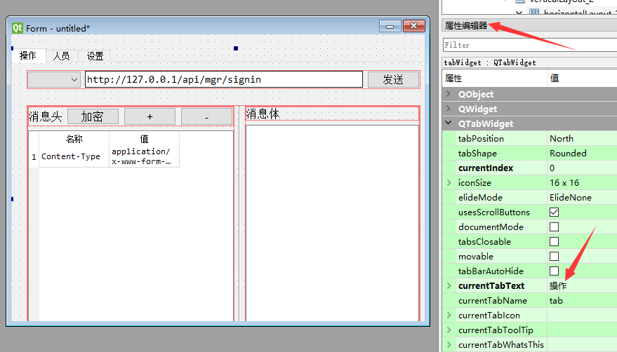

常用控件3
单选按钮和按钮组
QRadioButton 是单选按钮，如下图所示
说明
同一个父窗口 里面的多个单选按钮，只能选中一项。
如果你有多组单选按钮， 每组都应该有不同的父控件，或者不同的Layout。
通常建议：多组单选按钮，放到不同的 按钮组QButtonGroup中信号：选中状态改变
如果用户操作点击了按钮组QButtonGroup中的一个按钮，QButtonGroup就会发出buttonClicked信号，可以这样指定处理该信号的函数buttongroup.buttonClicked.connect(handleButtonClicked)
然后，在处理函数中调用QButtonGroup对象的checkedButton()函数，返回值就是被选中的按钮对象。
再调用这个返回的按钮对象的text()方法得到界面文本，就可以知道是哪个选项被选中了。
勾选按钮和按钮组
QCheckBox 是勾选按钮，如下图所示
- 说明
通常建议：多组勾选按钮，放到不同的 按钮组QButtonGroup中，按钮组就是父控件。
可以在 Qt设计师中设置QButtonGroup的exclusive属性， 来控制 是否 只能单选一个选项。 - 信号：选中状态改变
如果用户操作点击了按钮组QButtonGroup中的一个按钮，QButtonGroup就会发出buttonClicked信号，可以这样指定处理该信号的函数buttongroup.buttonClicked.connect(handleButtonClicked)QButtonGroup设置为 单选 情况下： 在处理函数中调用QButtonGroup对象的checkedButton()函数，返回值就是被选中的按钮对象。 再调用这个返回的按钮对象的text()方法得到界面文本，就可以知道是哪个选项被选中了。QButtonGroup设置为 多选 情况下：
要得知哪些按钮被选中， 可以 对所有该组中的 按钮调用 isChecked 方法 ，来判断。
tab页控件
我们可以通过tab页控件把界面分为好几个页面，如下所示
通过Qt designer 只需要拖拽控件到各个页面即可。
要修改 tab 页的标题，可以先点击该 tab 页，然后在下图所示处修改

- tab页中布局Layout 如果要在tab页上布局， 你可能会在对象查看器总直接右键点击该tab，可以你会发现 右键菜单里面没有布局项。 这是 Qt designer 非常坑爹的地方。
- 首先需要你在tab页上添加一个控件
- 然后点击 在对象查看器 右键点击上层 TabWidget ，这时，你就会发现有布局菜单了
进度条
QProgressBar 是进度条，如下图所示
说明
进度条也是一个常用的控件，当程序需要做一件比较耗费时间的任务（比如统计数据，下载文件等）时，可以用来向用户指示操作的进度。
而且有了进度显示，用户就知道应用程序仍在运行，并没有出问题。QProgressBar进度条把每个进度称之为一个step（步骤）。
我们可以通过它的setRange方法设定步骤个数，比如progressBar.setRange(0,5)
就设定了，进度分为5步。
然后，通过setValue方法，指定当前完成到了哪一步，比如progressBar.setValue(3)就表示完成了 3/5， 也就是 60%， 进度条就会显示60%的进度。
可以使用reset()将进度条倒退到开头。
有时候我们的任务没法知道完成了多少，比如下载一个未知大小的文件。
这时，可以把range范围都设置为0，这样，进度条会显示忙碌指示符，而不是显示进度百分比。
下面是一个进度条程序的示例代码from PySide2.QtWidgets import QApplication, QMainWindow, QPushButton, QProgressBar,QMessageBox from time import sleep from threading import Thread class Stats(): def __init__(self): self.window = QMainWindow() self.window.resize(500, 400) self.window.move(300, 300) self.progressBar = QProgressBar(self.window) self.progressBar.resize(300, 20) self.progressBar.move(80, 30) # 进度是 0 - 5， self.progressBar.setRange(0,5) self.button = QPushButton('统计', self.window) self.button.move(80, 80) self.button.clicked.connect(self.handleCalc) # 统计进行中标记，不能同时做两个统计 self.ongoing = False def handleCalc(self): def workerThreadFunc(): self.ongoing = True for i in range(1,6): sleep(1) # 设置进度值 self.progressBar.setValue(i) self.ongoing = False if self.ongoing: QMessageBox.warning( self.window, '警告','任务进行中，请等待完成') return # 通常任务执行比较耗时，应该在新的线程中进行 # 否则会阻塞主线程显示界面 worker = Thread(target=workerThreadFunc) worker.start() app = QApplication([]) stats = Stats() stats.window.show() app.exec_()上面的代码，运行时，会有很多告警，因为我们在新线程中操作界面对象，容易出问题。
更合理的方法是通过信号，在线程之间传递信息，对界面的操作都在主线程中完成。
如下```python from PySide2.QtWidgets import QApplication, QMainWindow, QPushButton, QProgressBar, QMessageBox from time import sleep from threading import Thread from PySide2.QtCore import Signal, QObject
信号库
class SignalStore(QObject):
# 定义一种信号
progress_update = Signal(int)
# 还可以定义其他作用的信号
实例化
so = SignalStore()
class Stats(): def init(self):
# 连接信号到处理的slot函数
so.progress_update.connect(self.setProgress)
self.window = QMainWindow()
self.window.resize(500, 400)
self.window.move(300, 300)
self.progressBar = QProgressBar(self.window)
self.progressBar.resize(300, 20)
self.progressBar.move(80, 30)
# 进度是 0 - 5，
self.progressBar.setRange(0, 5)
self.button = QPushButton('统计', self.window)
self.button.move(80, 80)
self.button.clicked.connect(self.handleCalc)
# 统计进行中标记，不能同时做两个统计
self.ongoing = False
def handleCalc(self):
def workerThreadFunc():
self.ongoing = True
for i in range(1, 6):
sleep(1)
# 发出信息，通知主线程进行进度处理
so.progress_update.emit(i)
self.ongoing = False
if self.ongoing:
QMessageBox.warning(
self.window,
'警告', '任务进行中，请等待完成')
return
worker = Thread(target=workerThreadFunc)
worker.start()
# 处理进度的slot函数
def setProgress(self, value):
self.progressBar.setValue(value)
app = QApplication([]) stats = Stats() stats.window.show() app.exec_()
### 数字输入框
`QSpinBox` 是数字输入框，可以输入或使用上下箭头选择数字，如下图所示

- 获取数字
通过 `value` 方法获取编辑框内的文本内容，比如
`number = box.value()`
注意：返回的是整数对象，不是字符串
- 方法：设置数字
通过 `setValue` 方法可以设置提示文本内容，比如
`box.setValue(100)`
### 日期控件
`QDateEdit` 类可以用来选择日期时间，如下图所示

获取日期 当用户点击日期时间控件并且选取了 日期和时间，后来程序要获取这个控件里面选定的日期时间，可以使用date方法获取日期对象。
如下所示
```python
# 返回 PySide2.QtCore.QDate 对象
qdate = dateEdit.date()
# 可以转化为 指定格式的字符串
dateStr = qdate.toString('yyyy-MM-dd')
# 也可以获取年月日 对应的数字 ，比如日期是2020年5月2号
year = qdate.year() # 返回 2020
month = qdate.month() # 返回 5
day = qdate.day() # 返回 2
选择文件框
QFileDialog 类可以用来选择文件或者目录，如下图所示

选择目录
通过getExistingDirectory静态方法 选择目录。
该方法，第一个参数是父窗口对象，第二个参数是选择框显示的标题。
比如from PySide2.QtWidgets import QFileDialog filePath = QFileDialog.getExistingDirectory(self.ui, "选择存储路径")返回值即为选择的路径字符串。
如果用户点击了 选择框的 取消选择按钮，返回 空字符串。选择单个文件 如果你想弹出文件选择框，选择一个 已经存在 的文件，可以使用
QFileDialog静态方法getOpenFileName，比如from PySide2.QtWidgets import QFileDialog filePath, _ = QFileDialog.getOpenFileName( self.ui, # 父窗口对象 "选择你要上传的图片", # 标题 r"d:\\data", # 起始目录 "图片类型 (*.png *.jpg *.bmp)" # 选择类型过滤项，过滤内容在括号中 )该方法返回值 是一个元组，第一个元素是选择的文件路径，第二个元素是文件类型，如果你只想获取文件路径即可，可以采用上面的代码写法。
如果用户点击了 选择框的 取消选择按钮，返回 空字符串。
如果你想弹出文件选择框，选择路径和文件名，来 保存一个文件 ，可以使用 QFileDialog 静态方法 getSaveFileName ，比如from PySide2.QtWidgets import QFileDialog filePath, _ = QFileDialog.getSaveFileName( self.ui, # 父窗口对象 "保存文件", # 标题 r"d:\\data", # 起始目录 "json类型 (*.json)" # 选择类型过滤项，过滤内容在括号中 )选择多个文件
如果要选择多个文件，使用getOpenFileNames静态方法from PySide2.QtWidgets import QFileDialog filePaths, _ = QFileDialog.getOpenFileNames( self.ui, # 父窗口对象 "选择你要上传的图片", # 标题 r"d:\\data", # 起始目录 "图片类型 (*.png *.jpg *.bmp)" # 选择类型过滤项，过滤内容在括号中 )上例中
filePaths对应的返回值是一个列表，里面包含了选择的文件。
如果用户点击了 选择框的 取消选择按钮，返回 空列表。